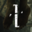
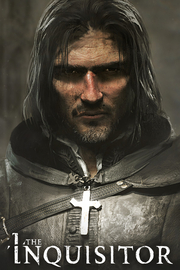

 The Inquisitor
Detalles
|  | |
| Tiempo de juego | No Jugado |
| Última actividad | Nunca |
| Añadido | 11/13/2024 0:35:38 |
| Modificado | 11/13/2024 1:05:56 |
| Estado de finalización | No Jugado |
| Librería | Playnite |
| Fuente | PORCHE |
| Plataforma | PC (Windows) |
| Fecha de lanzamiento | 2/8/2024 |
| Puntuación de la Comunidad | 67 |
| Puntuación de la Crítica | |
| Puntuación de usuario | |
| Género | Acción Aventura |
| Desarrollador | The Dust S.A. |
| Editor | Kalypso Media |
| Característica | Cloud Saves Compat. Total Con Mando Cromos De Logros De Préstamo Familiar Un Jugador |
| Enlaces | Punto de encuentro Discusiones Guías Noticias Página de la tienda PCGamingWiki Logros |
| Tag | Acción Acción y aventura Ambientales Aventura Detectives Fantasía Fantasía oscura Fe Finales múltiples Góticos Historia alternativa Investigación Las elecciones importan Magia Medievales Misterio Narraciones dinámicas Rol de acción Tercera persona Un jugador |
Descripción

The Inquisitor es un juego narrativo de aventuras y fantasía oscura que cuenta con elementos de acción que te obliga a tomar decisiones morales complejas. El juego está ambientado en una realidad alternativa religiosa. Está inspirado en la exitosa saga de novelas de fantasía de Jacek Piekara. Una vez crucificado y al borde de la muerte, una furia supina se apodera de Jesús. Cuando consigue liberarse, desata una venganza feroz contra todos los infieles. Con el paso de los siglos, un ejército de inquisidores fervientes imponen la fe de forma salvaje en la iglesia ensangrentada.
Eres Mordimer Madderdin, un inquisidor al servicio de Dios enviado a la ciudad de Königstein, que está plagada de una serie de misterios y pecados. Resuelve los diversos casos y delitos de aquellos que han transgredido la fe mientras descubres la verdad de un mal más oscuro de otro reino que está intentando entrar en el mundo de los vivos.


Sé el juez sagrado definitivo: Tu papel como inquisidor consiste en mantener el orden e imponer la fe en Dios. Sin embargo, el mundo está lleno de pecadores descarriados. De ti depende decidir cuál será el destino de quienes juzgues en los distintos casos y misiones narrativos. En este mundo, lo que es moral y lo que es correcto dejaron de ir a la par hace tiempo. ¿Y bien? ¿Mostrarás lenidad o una convicción imperecedera en la Ley Sagrada?


Una historia corrupta y no lineal: Esta historia, lúgubre y cruda, se centra en una religión que aboga por la venganza y la violencia. Un sistema de toma de decisiones ramificado pondrá a prueba tu moralidad. Elige tu camino y decide qué tipo de inquisidor quieres ser: compasivo o vengativo. En último término, deberás elegir qué tipo de huella quieres dejar en este mundo.


Investigación fundamentada: Mordimer posee habilidades y destrezas únicas que le permite resolver los diversos crímenes y misterios que han acaecido en Königstein. Localiza a sospechosos e interrógalos. Revela las verdades ocultas de la ciudad y de sus habitantes. Dale sentido a las pruebas y emite tu dictamen final.


Adéntrate en el Otro mundo: Quien lo rodea lo desconoce, pero Mordimer posee la habilidad de adentrarse en el misterioso Otro mundo. Allí puede descubrir los secretos más bien guardados que los sospechosos han intentado ocultar en sus almas. Sin embargo, existe un riesgo elevado de que, al adentrarte en este mundo, la fuerza tenebrosa que impera ahí haga todo lo posible para destruirte por haber puesto un pie en su reino.


Interrogatorios persuasivos: El siglo XVI conforma una época cruel de la justicia. Como inquisidor, tienes rienda suelta para emplear los métodos y herramientas que consideres necesarios para convencer a los sospechosos para que revelen "la verdad". Estos interrogatorios opcionales se remontan a la época de la verdadera Inquisición y depende de ti decidir si ejerces fuerza, y cuánta, a quienes vayas a interrogar.


Deja que tu espada hable por ti: A veces, se tienen que cercenar lenguas para que suelten. Gracias a un sistema de combate completamente centrado en las espadas, tendrás la opción u obligación de usar la fuerza bruta en algunos casos. Domina tu espada, busca la oportunidad y aprovéchate de los puntos débiles del enemigo.